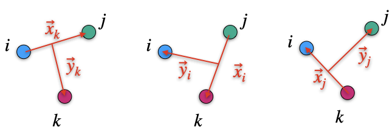

Use complex scaling method to solve unequal mass Faddeev Equations in R-space
The Faddeev equations provide a rigorous framework for the analysis of three-body systems in quantum mechanics. These equations are particularly useful in the study of scattering processes involving three unequal mass particles, denoted as \(i\), \(j\), and \(k\). The equations take into account pairwise interactions and the complexities introduced by the Coulomb force. This research note outlines the application of the complex scaling method to solve the Faddeev equations in R-space for unequal mass particles.
Faddeev Equations for Three-Body Systems
The Faddeev equations for a system of three unequal mass particles in their respective Jacobi coordinates are given by: \[ \begin{aligned} (E-H_0) \psi_{ij} &= V_{ij} \Psi \\ (E-H_0) \psi_{jk} &= V_{jk} \Psi \\ (E-H_0) \psi_{ki} &= V_{ki} \Psi, \end{aligned} \]
where \(E\) is the total energy, \(H_0\) is the free Hamiltonian, \(\Psi\) represents the three-body wave function, and \(\psi_{ij}\), \(\psi_{jk}\), and \(\psi_{ki}\) are the Faddeev components corresponding to each pair of particles in their respective Jacobi coordinates.
Coulomb Interaction and Cutoff Function
When incorporating the Coulomb interaction, the potential \(V_{ij}^C\) is divided into short-range \(\omega_{ij}^s\) and long-range \(\omega_{ij}^l\) parts through a cutoff function \(\chi_{ij}(x_k,y_k)\): \[ \begin{aligned} \omega_{ij}^s(x_k,y_k) &= V_{ij}^C \chi_{k}(x_k,y_k) \\ \omega_{ij}^l(x_k,y_k) &= V_{ij}^C [1-\chi_{k}(x_k,y_k)]. \end{aligned} \]
The cutoff function \(\chi_k(x_k,y_k)\) is designed to transition the full Coulomb interaction to the \(\omega_{ij}^s\) term when \(x_k\) is small, while the \(\omega_{ij}^l\) term takes over as \(x_k\) grows large, provided \(y_k < x_k\). A commonly used form for \(\chi_k(x_k,y_k)\) is given by:
\[ \chi_k(x_k,y_k) = \frac{2}{1+\exp{\left[\frac{(x_k/x_0)^\mu}{1+y_k/y_0}\right]}}, \]
where \(x_0\), \(y_0\), and \(\mu\) are parameters that can be set differently for each channel \(k\). It is required that \(\mu > 2\). The parameter \(x_0\) is related to the effective size of the two-body interaction, which is logical to associate with the size of a two-body bound state. Meanwhile, \(y_0\) correlates with the size of the three-body region significant for three-particle overlap.
The complete interacting potential between particles \(i\) and \(j\), denoted as \(V_{ij}\), is the sum of the nuclear potential \(V_{ij}^N\) and the Coulomb potential \(V_{ij}^C\). This potential can be expressed as:
\[ V_{ij} = V_{ij}^N + V_{ij}^C = V_{ij}^S + \omega_{ij}^l, \]
where \(V_{ij}^S\) represents the short-range part of the potential, which encompasses both the nuclear potential and the short-range Coulomb potential, and \(\omega_{ij}^l\) denotes the long-range part of the Coulomb potential.
Faddeev-Merkuriev Equations
To address the three-body problem with Coulomb interactions, the Faddeev-Merkuriev equations, formulated by S.P. Merkuriev, are employed: \[ \begin{align} (E-H_0-W) \psi_{ij} &= V_{ij}^S \Psi, \\ (E-H_0-W) \psi_{jk} &= V_{jk}^S \Psi, \\ (E-H_0-W) \psi_{ki} &= V_{ki}^S \Psi, \end{align} \]
where \(\Psi\) is the total three-body wave function, and \(\psi_{ij}\), \(\psi_{jk}\), and \(\psi_{ki}\) are the Faddeev components in the Coulomb basis. An alternative form of the Faddeev-Merkuriev equations is given by:
\[ \begin{align} (E-H_0-V_{ij}-W_k) \psi_{ij} &= V_{ij}^S (\psi_{jk}+\psi_{ki}), \\ (E-H_0-V_{jk}-W_i) \psi_{jk} &= V_{jk}^S (\psi_{ij}+\psi_{ki}), \\ (E-H_0-V_{ki}-W_j) \psi_{ki} &= V_{ki}^S (\psi_{ij}+\psi_{jk}), \end{align} \]
where \(W\) is the sum of the long-ranged parts of the Coulomb interactions, \(W=\omega_{ij}^l + \omega_{jk}^l + \omega_{ki}^l\), and \(W_k=\omega_{jk}^l + \omega_{ki}^l\), \(W_i\), and \(W_j\) are defined accordingly.
Initial State Wave Function
Considering the initial state of a reaction system \((i+j)+k\), where a projectile composed of bodies \(i\) and \(j\) collides with a target \(k\), the initial state wave function \(\psi_{ij}^{in}\) is introduced. The Faddeev components can then be expressed as: \[ \begin{align} \psi_{ij} = \psi_{ij}^{in} + \psi_{ij}^{sc}, \\ \psi_{jk} = \ \ \ \ \ + \psi_{jk}^{sc}, \\ \psi_{ki} = \ \ \ \ \ + \psi_{ki}^{sc}, \end{align} \]
indicating that only the Faddeev component with the incoming Jacobi coordinate contains the initial state. The term \(\psi_{ij}^{in}\) is a free incoming wave of the pair \(i+j\) with respect to target \(k\). In the absence of the Coulomb force, \(\psi_{ij}^{in}\) would simply be the product of the plane wave and the bound state of \(ij\). However, in the presence of the Coulomb force, its form becomes more complex due to the long-range nature of the Coulomb interaction, which can polarize and excite the projectile. It may be beneficial to represent the incoming wave function using distorted waves, which can be generalized by the equation:
\[ (E-H_0 -V_{ij} - \tilde{W}_k) \psi_{ij}^{in} = 0, \]
where \(\tilde{W}_k(\vec{x}_k,\vec{y}_k)\) is an auxiliary long-range potential that is exponentially bound in the \(x_\alpha\) direction and does not contribute to the particle recombination process. This potential can be expressed using a separable expansion:
\[ \tilde{W}_k(\vec{x}_k,\vec{y}_k) = \sum_a | \varphi_a^{ij}(\vec{x}_k) \rangle V_{(ij)k}^C(\vec{y}_k) \langle \varphi_a^{ij}(\vec{x}_k) |, \]
where \(\varphi_a^{ij}\) represents the bound state of the pair system \(ij\). The incoming wave function \(\psi_{ij}^{in}\) is then given by:
\[ \psi_{ij}^{in} (\vec{x}_k, \vec{y}_k) = \varphi_{a,in}^{ij}(\vec{x}_k) F(\vec{y}_k), \]
with \(F(\vec{y}_k)\) being the Coulomb function generated by \(V_{(ij)k}^C(\vec{y}_k)\) in the corresponding Jacobi coordinates.
In such a way the Faddeev amplitude \(\psi_{ij}\) intends to acquire full asymptotic behavior of the binary \((ij)-k\) channel, i.e: \[ \begin{aligned} \psi_{ij}(\vec{x}_k,\vec{y}_k \to \infty) = & \delta_{a_{in},a} \varphi_a^{ij}(\vec{x}_k)F(\vec{y}_k) + \sum_a f_a^k(\vec{x}_k,\vec{y}_k)\varphi_a^{ij}(\vec{x}_k)\phi_a^{k,out}(\vec{y}_k)\\ & + A_{(ij)k}(\vec{x}_k,\vec{y}_k)\Phi_k^{out}(\rho)， \end{aligned} \] where \(\rho=\sqrt{x_k^2 + y_k^2}\) defines the hyperradius, a coordinate which characterizes the size of the three-body system.
The term \(\delta_{a_{in},a} \varphi_a^{ij}(\vec{x}_k)F(\vec{y}_k)\) represents the incoming boundary condition, which is the product of the bound state \(\varphi_a^{ij}(\vec{x}_k)\) of the pair \((ij)\) and the Coulomb function \(F(\vec{y}_k)\), indicating the initial state of the system.
The sum over \(a\) involving \(f_a^k(\vec{x}_k,\vec{y}_k)\varphi_a^{ij}(\vec{x}_k)\phi_a^{k,out}(\vec{y}_k)\) accounts for the outgoing waves corresponding to binary reactions where the pair \((ij)\) remains bound after the interaction, with \(f_a^k\) being the scattering amplitude and \(\phi_a^{k,out}(\vec{y}_k)\) representing the outgoing wave of particle \(k\).
Lastly, \(A_{(ij)k}(\vec{x}_k,\vec{y}_k)\Phi_k^{out}(\rho)\) describes the three-particle breakup with \(A_{(ij)k}\) being the breakup amplitude and \(\Phi_k^{out}(\rho)\) representing the outgoing wave for the three-particle breakup channel.
This expression encompasses the full range of possible outcomes in a three-body scattering event, including elastic scattering, inelastic scattering, and breakup processes.
Driven Form of Faddeev-Merkuriev Equations
In the asymptote, one has the following behavior: \[ \begin{align} \varphi_a^{ij}(x_k \to \infty) \propto \exp(-k_ax_a), \\ \phi_a^{k,out}(y_k \to \infty) \propto \exp(i q_a y_k), \\ \Phi_k^{out}(\rho)(\rho \to \infty) \propto \exp(i\kappa\rho), \end{align} \] Then Faddeev-Merkuriev equations might be rewritten in a so-called driven form: \[ \begin{align} (E-H_0-V_{ij}-W_k) \psi^{sc}_{ij} &= V_{ij}^S (\psi^{sc}_{jk}+\psi^{sc}_{ki}) + (W_k- \tilde{W}_k)\psi_{ij}^{in}, \\ (E-H_0-V_{jk}-W_i) \psi^{sc}_{jk} &= V_{jk}^S (\psi^{sc}_{ij}+\psi^{in}_{ij}+\psi^{sc}_{ki}),\\ (E-H_0-V_{ki}-W_j) \psi^{sc}_{ki} &= V_{ki}^S (\psi^{sc}_{ij} + \psi_{ij}^{in}+\psi^{sc}_{jk}). \end{align} \]
Comprehensive Statement of Faddeev-Merkuriev Equations
Let’s construct a comprehensive statement that encapsulates all the given information about the Faddeev-Merkuriev equations for the bound state problem in quantum mechanics. The statement will include the equations themselves, the angular momentum basis, the representation of the wave function, and the forms of the kinetic energy operator, the pair potential, and the remnant Coulomb interaction.
In the study of three-body bound state problems in quantum mechanics, the Faddeev-Merkuriev equations play a pivotal role by providing a framework to account for pairwise potential interactions and long-range Coulomb forces. These equations are expressed as:
\[ \begin{aligned} (E-H_0-V_{ij}-W_k) \psi_{ij} &= V_{ij}^S (\psi_{jk}+\psi_{ki}), \\ (E-H_0-V_{jk}-W_i) \psi_{jk} &= V_{jk}^S (\psi_{ij}+\psi_{ki}),\\ (E-H_0-V_{ki}-W_j) \psi_{ki} &= V_{ki}^S (\psi_{ij}+\psi_{jk}), \end{aligned} \]
where \(E\) is the total energy of the system, \(H_0\) is the kinetic energy operator, \(V_{ij}\) is the pairwise potential between particles \(i\) and \(j\), \(W_k\) is the remnant Coulomb interaction, and \(\psi_{ij}\) is the Faddeev component of the total wave function corresponding to particles \(i\) and \(j\). The superscript \(S\) on the potentials denotes the symmetrized part of the interaction.
The angular momentum basis used in the calculations is specified by the ket \(| \alpha_k M \rangle\), which is defined as:
\[ | \alpha_k M \rangle = | \big[l_k(s_is_j)s_{ij}\big]j_{ij}, (\lambda_ks_k)j_k; JM\rangle, \]
where \(l_k\) and \(\lambda_k\) are the orbital angular momenta, \(s_i\), \(s_j\), and \(s_k\) are the spins of the three particles, \(j_{ij}\) and \(j_k\) are the total angular momenta, and \(J\) and \(M\) are the total angular momentum and its projection of the three-body system, respectively.
This leads to a rewritten form of the Faddeev-Merkuriev equations:
\[ \begin{aligned} \Big\langle x_ky_k\alpha_k \Big| E - H_0 -V_{ij} - W_k \Big| \psi_{ij}\Big \rangle &= \langle x_k y_k \alpha_k | V_{ij}^S \Big( |\psi_{jk}\rangle + |\psi_{ki}\rangle \Big), \\ \Big\langle x_iy_i\alpha_i \Big| E - H_0 -V_{jk} - W_i \Big| \psi_{jk}\Big \rangle &= \langle x_i y_i \alpha_i | V_{jk}^S \Big( |\psi_{ij}\rangle + |\psi_{ki}\rangle \Big),\\ \Big\langle x_jy_j\alpha_j \Big| E - H_0 -V_{ki} - W_j \Big| \psi_{ki}\Big \rangle &= \langle x_j y_j \alpha_j | V_{ki}^S \Big( |\psi_{ij}\rangle + |\psi_{jk}\rangle \Big). \end{aligned} \]
The kinetic energy operator \(H_0\) in the Jacobi coordinates \(x_k y_k \alpha_k\) is given by:
\[ H_0 = -\Delta^{\alpha_k}(x_k,y_k) =\frac{\hbar^2}{2\mu_{ij}}\Big( -\frac{\partial^2}{\partial x_k^2} + \frac{l_k(l_k+1)}{x_k^2} \Big) + \frac{\hbar^2}{2\mu_k}\Big( -\frac{\partial^2}{\partial y_k^2} + \frac{\lambda_k(\lambda_k+1)}{y_k^2} \Big). \]
The pair potential in the angular momentum basis is:
\[ \langle x_k y_k \alpha_k | V_{ij} | x_k' y_k' \alpha_k' \rangle = \frac{ \delta (y_k-y_k') } {y_k^2} V_{\alpha_k,\alpha_k'} (x_k,x_k') \delta_{j'_{ij},j_{ij}} \delta_{s'_{ij},s_{ij}}, \]
which simplifies to the following form if the potential is local:
\[ \langle x_k y_k \alpha_k | V_{ij} | x_k' y_k' \alpha_k' \rangle = \frac{ \delta (x_k-x_k') } {x_k^2}\frac{ \delta (y_k-y_k') } {y_k^2} V_{\alpha_k,\alpha_k'} (x_k) \delta_{j'_{ij},j_{ij}} \delta_{s'_{ij},s_{ij}}. \]
The remnant Coulomb interaction \(W_k\) is expanded in the angular momentum basis as:
\[ \begin{aligned} W_k^{\alpha_k,\alpha_k'}(x_k,y_k) = &2\pi\sum_{LS}(2S+1)\Big[(2j_{ij}+1)(2j_{ij}'+1)(2j_k+1)(2j_k'+1)(2\lambda_k+1)(2\lambda_k'+1) \Big]^{1/2}\\ &\times \left\{\begin{array}{ccc} l_k^{\prime} & \lambda_k^{\prime} & L \\ s_{ij} & s_k & S \\ j_{ij}^{\prime} & j_k^{\prime} & J \end{array}\right\} \left\{\begin{array}{ccc} l_k & \lambda_k & L \\ s_{ij} & s_k & S \\ j_{ij} & j_k & J \end{array}\right\}\\ &\times \sum_{M_L}\sum_{m_{l_k}}\sum_{m_{\lambda_k}}\sum_{m'_{l_k}}\sum_{m'_{\lambda_k}}\langle l_k m_{l_k} \lambda_k m_{\lambda_k} |LM_L \rangle \\ &\times \langle l'_k m'_{l_k} \lambda'_k m'_{\lambda_k} |LM_L \rangle \int_{-1}^1 dx W_k(x_k,y_k,x) Y_{l_k}^{m_{l_k}*}(\hat{x}_k)Y_{l'_k}^{m'_{l_k}}(\hat{x}_k). \end{aligned} \]
Transformation of Jacobi Coordinates

In the context of Jacobi coordinates, the transformation between different sets of coordinates is given by linear transformations. For a three-body system with masses \(m_i\), \(m_j\), and \(m_k\), and the total mass \(M = m_i + m_j + m_k\), the following coordinate transformations can be defined:
For the transformation between the coordinates associated with masses \(m_k\) and \(m_i\), the relationship is given by:
\[ \begin{bmatrix} \vec{x}_k \\ \vec{x}_i \end{bmatrix} = \begin{bmatrix} a_{ki} & b_{ki} \\ c_{ki} & d_{ki} \end{bmatrix} \begin{bmatrix} \vec{y}_k \\ \vec{y}_i \end{bmatrix} \]
where the transformation coefficients are:
\[ \begin{align} a_{ki}&=\frac{m_k(M-m_k)}{m_km_i-(M-m_k)(M-m_i)} \\ b_{ki}&=\frac{(M-m_k)(M-m_i)}{m_km_i-(M-m_k)(M-m_i)} \\ c_{ki}&= -\frac{(M-m_k)(M-m_i)}{m_km_i-(M-m_k)(M-m_i)} \\ d_{ki}&= -\frac{m_i(M-m_i)}{m_km_i-(M-m_k)(M-m_i)} \end{align} \]
Similarly, for the transformation involving masses \(m_j\) and \(m_k\), we have:
\[ \begin{bmatrix} \vec{x}_j \\ \vec{x}_k \end{bmatrix} = \begin{bmatrix} a_{jk} & b_{jk} \\ c_{jk} & d_{jk} \end{bmatrix} \begin{bmatrix} \vec{y}_j \\ \vec{y}_k \end{bmatrix} \]
with the coefficients:
\[ \begin{align} a_{jk}&=\frac{m_j(M-m_j)}{m_jm_k-(M-m_j)(M-m_k)} \\ b_{jk}&=\frac{(M-m_j)(M-m_k)}{m_jm_k-(M-m_j)(M-m_k)} \\ c_{jk}&= -\frac{(M-m_j)(M-m_k)}{m_jm_k-(M-m_j)(M-m_k)} \\ d_{jk}&= -\frac{m_k(M-m_k)}{m_jm_k-(M-m_j)(M-m_k)} \end{align} \]
And finally, for the transformation involving masses \(m_i\) and \(m_j\), the transformation is:
\[ \begin{bmatrix} \vec{x}_i \\ \vec{x}_j \end{bmatrix} = \begin{bmatrix} a_{ij} & b_{ij} \\ c_{ij} & d_{ij} \end{bmatrix} \begin{bmatrix} \vec{y}_i \\ \vec{y}_j \end{bmatrix} \]
where the coefficients are:
\[ \begin{align} a_{ij}&=\frac{m_i(M-m_i)}{m_im_j-(M-m_i)(M-m_j)} \\ b_{ij}&=\frac{(M-m_i)(M-m_j)}{m_im_j-(M-m_i)(M-m_j)} \\ c_{ij}&= -\frac{(M-m_i)(M-m_j)}{m_im_j-(M-m_i)(M-m_j)} \\ d_{ij}&= -\frac{m_j(M-m_j)}{m_im_j-(M-m_i)(M-m_j)} \end{align} \]
These transformations allow one to switch between different sets of Jacobi coordinates in the analysis of the three-body problem, facilitating the understanding of the system’s dynamics.
Evaluation of Matrix Elements
Consider the matrix element \(\langle x_k y_k \alpha_k | V_{ij}^S | \psi_{jk}\rangle\) within the context of quantum mechanics. The evaluation of this term can be expanded as follows: \[ \langle x_k y_k \alpha_k | V_{ij}^S | \psi_{jk} \rangle = \sum_{\alpha_k'} \int x_k'^2 dx_k' \langle x_k \alpha_k | V_{ij}^S | x_k' \alpha'_k \rangle \langle x_k' y_k\alpha'_k | \psi_{jk} \rangle \] \[ = \sum_{\alpha_k'} \int x_k'^2 dx_k' V_{ij}^S(x_k,x_k') \langle x_k' y_k\alpha'_k | \psi_{jk} \rangle \delta_{j'_{ij},j_{ij}} \delta_{s'_{ij},s_{ij}}, \]
where the Kronecker deltas ensure the conservation of quantum numbers related to the interaction \(V_{ij}^S\).
For the term \(\langle x_k' y_k \alpha_k' | \psi_{jk} \rangle\), we have:
\[ \begin{aligned} \langle x_k' y_k \alpha'_k | \psi_{jk} \rangle =& \sum_{\alpha_i} \int x_i^2 y_i^2 dx_i dy_i \langle x_k' y_k \alpha'_k | x_i y_i \alpha_i \rangle \langle x_i y_i \alpha_i | \psi_{jk} \rangle \\ = &\sum_{\alpha_i} \int x_i^2 y_i^2 dx_i dy_i \int_{-1}^1 dx\ \mathcal{G}_{\alpha'_k,\alpha_i}(y_k,y_i,x) \frac{\delta(x_k' - \pi_k(y_k,y_i,x))}{x_k'^2} \\ &\times \frac{\delta(x_i - \pi_i(y_k,y_i,x))}{x_i^2} \langle x_i y_i \alpha_i | \psi_{jk} \rangle, \end{aligned} \]
where \(\pi_k\) and \(\pi_i\) are defined as:
\[ \pi_k = \sqrt{a^2_{ki}y_k^2 + 2a_{ki}b_{ki}y_ky_ix + b^2_{ki}y_i^2}, \quad \pi_i = \sqrt{c^2_{ki}y_k^2 + 2c_{ki}d_{ki}y_ky_ix + d^2_{ki}y_i^2}, \]
and the delta function relationship is given by:
\[ \frac{\delta\Big(x'^2_k - \pi_k(y_k,y_i,x)\Big)}{x'^2_k} = \frac{\delta\Big( x-x_0(x_k',y_k,y_i) \Big)}{a_{ki}b_{ki}y_ky_ix'_k}, \]
with \(x_0\) defined as:
\[ x_0(x_k',y_k,y_i) = \frac{x'^2_k - a_{ki}^2y_k^2 -b^2_{ki}y_i^2}{2a_{ki}b_{ki}y_ky_i}. \]
Thus, the term \(\langle x_k' y_k \alpha_k' | \psi_{jk} \rangle\) can be simplified to:
\[ \langle x_k' y_k \alpha_k' | \psi_{jk} \rangle = \sum_{\alpha_i} \int \frac{y_idy_i}{a_{ki}b_{ki}x_ky_k} \mathcal{G}_{\alpha'_k,\alpha_i}(y_k,y_i,x_0) \langle x_iy_i\alpha_i | \psi_{jk} \rangle, \]
where \(\mathcal{G}_{\alpha'_k,\alpha_i}(y_k,y_i,x)\) is \[ \begin{align} \mathcal{G}_{\alpha'_k,\alpha_i}(y_k,y_i,x) =& \sum_{LS}(2S+1)\sqrt{(2j_{ij}+1)(2j_k+1)(2j_{jk}+1)(2j_i+1)}\begin{Bmatrix} l_k & s_{ij} & j_{ij} \\ \lambda_k & s_k & j_k \\ L & S & J \\ \end{Bmatrix} \\ &\times \begin{Bmatrix} l_i & s_{jk} & j_{jk} \\ \lambda_i & s_i & j_i \\ L & S & J \\ \end{Bmatrix} 8\pi^2\sum_{M=-L}^L \Big\{Y_{l_k}^{m_{l_k*}}(\hat{x}_k) Y_{\lambda_k}^{m_{\lambda_k}*}(\hat{y}_k)\Big\}^{LM_L}\Big\{Y_{l_i}^{m_{l_i}}(\hat{x}_i) Y_{\lambda_i}^{m_{\lambda_i}}(\hat{y}_i)\Big\}^{LM_L}\\ & \times (-)^{s_{jk}+2s_i+s_j+s_k} \sqrt{(2s_{ij}+1)(2s_{jk}+1)}\begin{Bmatrix} s_i & s_j & s_{ij} \\ s_k & S & s_{jk} \\ \end{Bmatrix} \end{align} \]
which given by a complex expression involving sums over quantum numbers, Clebsch-Gordan coefficients, and spherical harmonics, ryyeflecting the symmetries and angular momentum coupling in the system.
Lastly, the symmetry property of the overlap \(\langle x_k' y_k \alpha'_k | x_i y_i \alpha_i \rangle= \langle x_i y_i \alpha_i |x_k' y_k \alpha'_k \rangle^*\), where the asterisk denotes complex conjugation, implies that \(\mathcal{G}_{\alpha'_k,\alpha_i}(y_k,y_i,x) = \mathcal{G}_{\alpha_i,\alpha'_k}(y_k,y_i,x)\) due to the real nature of the overlap. This symmetry can be used to simplify calculations and ensure the consistency of the theoretical framework.
Faddeev equations in Lagrange mesh basis
The Faddeev components can be rewritten in the angular momentum basis as:
\[ \begin{align} \langle x_k y_k \alpha_k | \psi_{ij}\rangle &= \frac{\phi^k_{\alpha_k}(x_k, y_k)}{x_k y_k}, \\ \langle x_i y_i \alpha_i | \psi_{jk}\rangle &= \frac{\phi^i_{\alpha_i}(x_i, y_i)}{x_i y_i},\\ \langle x_j y_j \alpha_j | \psi_{ki}\rangle &= \frac{\phi^j_{\alpha_j}(x_j, y_j)}{x_j y_j}, \end{align} \]
where \(\phi(x,y)\) is the radial part of the wave function, which can be expanded using the Lagrange mesh function as
\[ \begin{align} \phi_{\alpha_k}^k (x_k, y_k) &= \sum_{kx=1}^{nx} \sum_{ky=1}^{ny}c_{kx,ky}^{k,\alpha_k}f_{kx}^{\alpha_k} (x_k)f_{ky}^{\alpha_k}(y_k), \\ \phi_{\alpha_i}^i (x_i, y_i) &= \sum_{ix=1}^{nx} \sum_{iy=1}^{ny}c_{ix,iy}^{i,\alpha_i}f_{ix}^{\alpha_i} (x_i)f_{iy}^{\alpha_i}(y_i), \\ \phi_{\alpha_j}^j (x_j, y_j) &= \sum_{jx=1}^{nx} \sum_{jy=1}^{ny}c_{jx,jy}^{j,\alpha_j}f_{jx}^{\alpha_j} (x_j)f_{jy}^{\alpha_j}(y_j), \end{align} \]
Then the Faddeev-Merkuriev equations in the Lagrange mesh basis can be rewritten as
\[ \begin{align} \Bigg\langle f_{kx'}^{\alpha_k'}f_{ky'}^{\alpha_k'} \Bigg|E-H_0-V_{ij}-W_k \Bigg|\sum_{\alpha_k} \sum_{kx}\sum_{ky} \frac{c_{kx,ky}^{k,\alpha_k}f_{kx}^{\alpha_k}f_{ky}^{\alpha_k}}{x_ky_k} \Bigg\rangle \\ =\Bigg \langle f_{kx'}^{\alpha_k'}f_{ky'}^{\alpha_k'} \Bigg|V_{ij}^S\Bigg( \Big|\sum_{\alpha_i} \sum_{ix}\sum_{iy}\frac{c_{ix,iy}^{i,\alpha_i}f_{ix}^{\alpha_i}f_{iy}^{\alpha_i}}{x_iy_i}\Big \rangle + \Big|\sum_{\alpha_j} \sum_{jx}\sum_{jy}\frac{c_{jx,jy}^{j,\alpha_j}f_{jx}^{\alpha_j}f_{jy}^{\alpha_j}}{x_jy_j}\Big \rangle \Bigg) \end{align} \]
\[ \begin{align} \Bigg\langle f_{ix'}^{\alpha_i'}f_{iy'}^{\alpha_i'} \Bigg|E-H_0-V_{jk}-W_i \Bigg|\sum_{\alpha_i} \sum_{ix}\sum_{iy} \frac{c_{ix,iy}^{i,\alpha_i}f_{ix}^{\alpha_i}f_{iy}^{\alpha_i}}{x_iy_i} \Bigg\rangle \\ =\Bigg \langle f_{ix'}^{\alpha_i'}f_{iy'}^{\alpha_i'} \Bigg|V_{jk}^S\Bigg( \Big|\sum_{\alpha_k} \sum_{kx}\sum_{ky}\frac{c_{kx,ky}^{k,\alpha_k}f_{kx}^{\alpha_k}f_{ky}^{\alpha_k}}{x_ky_k}\Big \rangle + \Big|\sum_{\alpha_j} \sum_{jx}\sum_{jy}\frac{c_{jx,jy}^{j,\alpha_j}f_{jx}^{\alpha_j}f_{jy}^{\alpha_j}}{x_jy_j}\Big \rangle \Bigg) \end{align} \]
\[ \begin{align} \Bigg\langle f_{jx'}^{\alpha_j'}f_{jy'}^{\alpha_j'} \Bigg|E-H_0-V_{ki}-W_j \Bigg|\sum_{\alpha_j} \sum_{jx}\sum_{jy} \frac{c_{jx,jy}^{j,\alpha_j}f_{jx}^{\alpha_j}f_{jy}^{\alpha_j}}{x_jy_j} \Bigg\rangle \\ =\Bigg \langle f_{jx'}^{\alpha_j'}f_{jy'}^{\alpha_j'} \Bigg|V_{ki}^S\Bigg( \Big|\sum_{\alpha_k} \sum_{kx}\sum_{ky}\frac{c_{kx,ky}^{k,\alpha_k}f_{kx}^{\alpha_k}f_{ky}^{\alpha_k}}{x_ky_k}\Big \rangle + \Big|\sum_{\alpha_i} \sum_{ix}\sum_{iy}\frac{c_{ix,iy}^{i,\alpha_i}f_{ix}^{\alpha_i}f_{iy}^{\alpha_i}}{x_iy_i}\Big \rangle \Bigg) \end{align} \]
Then we can write them in a compact term as following
\[ \begin{align} \Bigg[ E[I_{\alpha_k}]\otimes[I_{kx}]\otimes[I_{ky}]-[I_{\alpha_k}]\otimes[T_{kx}]\otimes[I_{ky}] - [I_{\alpha_k}]\otimes[I_{kx}]\otimes[T_{ky}] - [V_{ij}]\otimes[I_{ky}] -[W_k]\Bigg]c_{kx,ky}^{k,\alpha_k} \\ =\Big([V_{ij}^S]\otimes [I_{ky}]\Big)\Big ( [R_{kx,ky,ix,iy}^{\alpha_k\gets\alpha_i}]c_{ix,iy}^{i,\alpha_i} + [R_{kx,ky,jx,jy}^{\alpha_k\gets\alpha_j}]c_{jx,jy}^{j,\alpha_j}\Big) \end{align} \]
\[ \begin{align} \Bigg[ E[I_{\alpha_i}]\otimes[I_{ix}]\otimes[I_{iy}]-[I_{\alpha_i}]\otimes[T_{ix}]\otimes[I_{iy}] - [I_{\alpha_i}]\otimes[I_{ix}]\otimes[T_{iy}] - [V_{jk}]\otimes[I_{iy}] -[W_i]\Bigg]c_{ix,iy}^{i,\alpha_i} \\ =\Big([V_{jk}^S]\otimes [I_{iy}]\Big)\Big ( [R_{ix,iy,kx,ky}^{\alpha_i\gets\alpha_k}]c_{kx,ky}^{k,\alpha_k} + [R_{ix,iy,jx,jy}^{\alpha_i\gets\alpha_j}]c_{jx,jy}^{j,\alpha_j}\Big) \end{align} \]
\[ \begin{align} \Bigg[ E[I_{\alpha_j}]\otimes[I_{jx}]\otimes[I_{jy}]-[I_{\alpha_j}]\otimes[T_{jx}]\otimes[I_{jy}] - [I_{\alpha_j}]\otimes[I_{jx}]\otimes[T_{jy}] - [V_{ki}]\otimes[I_{jy}] -[W_j]\Bigg]c_{jx,jy}^{j,\alpha_j} \\ =\Big([V_{ki}^S]\otimes [I_{jy}]\Big)\Big ( [R_{jx,jy,kx,ky}^{\alpha_j\gets\alpha_k}]c_{kx,ky}^{k,\alpha_k} + [R_{jx,jy,ix,iy}^{\alpha_j\gets\alpha_i}]c_{ix,iy}^{i,\alpha_i}\Big) \end{align} \]
The Lagrange-Laguerre mesh regularized function can be defined as
\[ \begin{align} \hat{f}_{ax}(x_{a'}) &= \frac{x_{a'}}{x_a} f_{ax}(x_{a'})=\lambda_{ax}^{-1/2} \delta_{a,a'}, \ \ \ \ \ a\in\{i,j,k\} \\ \hat{f}_{ay}(y_{a'}) &= \frac{y_{a'}}{y_a} f_{ay}(y_{a'})=\lambda_{ay}^{-1/2} \delta_{a,a'}, \ \ \ \ \ a\in\{i,j,k\} \end{align} \]
Since the regularized function is not orthogonal, then we have
\[ \begin{align} [I_{ax}] = \langle \hat{f}_{ax'}| \hat{f}_{ax}\rangle &= \delta_{ax,ax'} + \frac{(-)^{ax-ax'}}{\sqrt{x_ax_{a'}}}, \ \ \ \ \ a\in \{i,j,k\} \\ [I_{ay}] = \langle \hat{f}_{ay'}| \hat{f}_{ay}\rangle &= \delta_{ay,ay'} + \frac{(-)^{ay-ay'}}{\sqrt{y_ay_{a'}}}, \ \ \ \ \ a\in \{i,j,k\} \end{align} \]
And for the kinetic energy operator, according to Eq.(5.20) of Daniel Baye’s physics reports, one has
\[ \begin{align} [T_{ax}] &= \frac{\hbar^2}{2\mu_a^{2b}}\Bigg\{ \langle f_{ax'} | -\frac{d^2}{dr^2} | f_{ax} \rangle^G -(-)^{ax-ax'}\frac{1}{4\sqrt{x_ax_{a'}}} + \frac{l_a(l_a+1)}{x_a^2} \delta_{ax,ax'}\Bigg\}, \\ [T_{ay}] &= \frac{\hbar^2}{2\mu_a^{3b}}\Bigg\{ \langle f_{ay'} | -\frac{d^2}{dr^2} | f_{ay} \rangle^G -(-)^{ay-ay'}\frac{1}{4\sqrt{y_ay_{a'}}} + \frac{\lambda_a(\lambda_a+1)}{y_a^2} \delta_{ay,ay'}\Bigg\}, \end{align} \]
with
\[ \langle f_{ax'}|\frac{d^2}{d r^2}| f_{ax}\rangle^G \equiv \int_0^{\infty} d r f_{ax'}(r) f''_{ax}(r) =\begin{cases}-\frac{1}{12x_a^2}[x_a^2 - 2(2N+\alpha+1)x_a + \alpha^2 -4 ], & ax=ax', \\ (-1)^{ax-ax'}\frac{x_a+x_{a'}}{\sqrt{x_ax_{a'}}(x_a-x_{a'})^2}, & ax \neq ax',\end{cases} \]
\[ \langle f_{ay'}|\frac{d^2}{d r^2}| f_{ay}\rangle^G \equiv \int_0^{\infty} d r f_{ay'}(r) f''_{ay}(r) =\begin{cases}-\frac{1}{12y_a^2}[y_a^2 - 2(2N+\alpha+1)y_a + \alpha^2 -4 ], & ay=ay', \\ (-1)^{ay-ay'}\frac{y_a+y_{a'}}{\sqrt{y_ay_{a'}}(y_a-y_{a'})^2}, & ay \neq ay',\end{cases} \]
For the potential matrix we have two possibilities, one for the local potential of \(V_{ij}\)
\[ [V^a] = \langle f_{ax'} | V^a|f_{ax}\rangle =\int_0^\infty f_{ax'}(r)V^a(r)f_{ax}(r)dr=V^a(x_a) \delta_{ax,ax'} \]
And for nonlocal potential
\[ [V^a] = \langle f_{ax'} | V^a|f_{ax}\rangle =\int_0^\infty f_{ax'}(r')V^a(r',r)f_{ax}(r)dr'dr=\frac{V^a(x_{a'},x_a)}{f_{ax'}(x_{a'})f_{ax}(x_a)} \]
For the long-ranged Coulomb interaction, one has
\[ [W_a] = \int_0^\infty dx dy \Big\langle f_{ax'}^{\alpha_a'} f_{ay'}^{\alpha_a'} \Big| xy \Big\rangle \Big\langle xy\Big| f_{ax}^{\alpha_a} f_{ay}^{\alpha_a} \Big\rangle W_a^{\alpha_a',\alpha_a}(x,y) = W_a^{\alpha_a',\alpha_a}(x_a,y_a) \]
And finally with
\[ \begin{aligned} \Big[R_{ax,ay,bx,by}^{\alpha_a\gets\alpha_b}\Big] &= \langle f_{ax}^{\alpha_a}f_{ay}^{\alpha_a} | \frac{x_ay_a}{x_by_b} f_{bx}^{\alpha_b}f_{by}^{\alpha_b}\rangle =\int dx_ady_a \langle f_{ax}^{\alpha_a}f_{ay}^{\alpha_a} | x_ay_a \rangle \langle x_ay_a|\frac{x_ay_a}{x_by_b} f_{bx}^{\alpha_b}f_{by}^{\alpha_b}\rangle \\ &= \int \frac{ dy_b \mathcal{G}_{\alpha_a,\alpha_b}(y_a,y_b,x_0)f_{bx}^{\alpha_b}(\pi_b)f_{by}^{\alpha_b}(y_b)}{f_{ax}^{\alpha_a}(x_a)f_{ay}^{\alpha_a}(y_a)a_{ab}b_{ab}\pi_b} = \frac{ \mathcal{G}_{\alpha_a,\alpha_b}(y_a,y_b,x_0)f_{bx}^{\alpha_b}(\pi_b)}{f_{ax}^{\alpha_a}(x_a)f_{ay}^{\alpha_a}(y_a)f_{by}^{\alpha_b}(y_b)a_{ab}b_{ab}\pi_b} \end{aligned} \]
Eigenvalue problem of the Faddeev Equations
The Faddeev equation can be concisely expressed as follows: \[ E[c] = (\tilde{H} + \mathcal{R})[c] \] where \[ [c] = \begin{bmatrix} c_{kx,ky}^{k,\alpha_k} \\ c_{ix,iy}^{i,\alpha_i} \\ c_{jx,jy}^{j,\alpha_j} \end{bmatrix}, \] and \[ [\tilde{H}] = \begin{bmatrix} H_k & 0 & 0 \\ 0 & H_i & 0 \\ 0 & 0 & H_j \end{bmatrix}, \] with \[ \begin{align} [H_k] &= I_{\alpha_k} \otimes T_{kx} \otimes I_{ky} + I_{\alpha_k} \otimes I_{kx} \otimes T_{ky} + V_{ij} \otimes I_{ky} + W_k, \\ [H_i] &= I_{\alpha_i} \otimes T_{ix} \otimes I_{iy} + I_{\alpha_i} \otimes I_{ix} \otimes T_{iy} + V_{jk} \otimes I_{iy} + W_i, \\ [H_j] &= I_{\alpha_j} \otimes T_{jx} \otimes I_{jy} + I_{\alpha_j} \otimes I_{jx} \otimes T_{jy} + V_{ki} \otimes I_{jy} + W_j, \end{align} \] and \[ [\mathcal{R}] = \begin{bmatrix} 0 & (V_{ij}^s \otimes I_{ky}) R_{kx,ky,ix,iy}^{\alpha_k \gets \alpha_i} & (V_{ij}^s \otimes I_{ky}) R_{kx,ky,jx,jy}^{\alpha_k \gets \alpha_j} \\ (V_{jk}^s \otimes I_{iy}) R_{ix,iy,kx,ky}^{\alpha_i \gets \alpha_k} & 0 & (V_{jk}^s \otimes I_{iy}) R_{ix,iy,jx,jy}^{\alpha_i \gets \alpha_j} \\ (V_{ki}^s \otimes I_{jy}) R_{jx,jy,kx,ky}^{\alpha_j \gets \alpha_k} & (V_{ki}^s \otimes I_{jy}) R_{jx,jy,ix,iy}^{\alpha_j \gets \alpha_i} & 0 \end{bmatrix}. \] This formulation encapsulates the interactions and kinetic terms of the particles indexed by \(k\), \(i\), and \(j\), along with their respective coupling matrices.